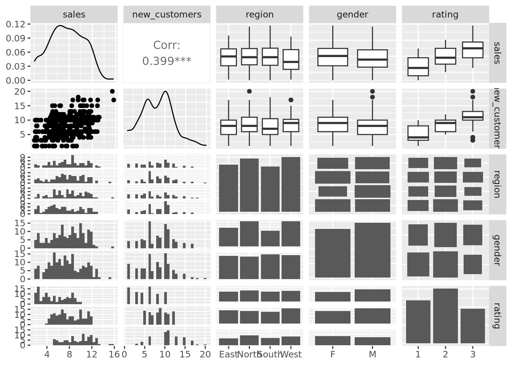

# Download the employee performance dataset from the URL provided
url <- "https://peopleanalytics-regression-book.org/data/employee_performance.csv"
perf <- read.csv(url)03B-Ordinal_regression - SOLUTIONS
In this document we will conduct ordinal logistic regression on fictional data on employee performance evaluation metrics for a group of salespeople.
- sales: annual sales of the individual in millions of dollars
- new_customers: number of new customers acquired by individual
- region: region individual works in (North, South, East, West)
- gender: gender of individual
- rating: performance rating of individual (1 = Low, 2 = Middle, 3 = High)
Exercise 1 - Running a simple ordinal logistic regression model
# view the first few rows in the data set to acquaint yourself with the data
head(perf) sales new_customers region gender rating
1 10.10 9 North M 2
2 11.67 17 West F 3
3 8.91 13 North M 3
4 7.73 10 South F 2
5 11.36 12 North M 2
6 8.06 12 North M 2summary(perf) sales new_customers region gender
Min. : 2.000 Min. : 1.000 Length:366 Length:366
1st Qu.: 5.362 1st Qu.: 6.000 Class :character Class :character
Median : 7.485 Median : 8.000 Mode :character Mode :character
Mean : 7.543 Mean : 8.025
3rd Qu.: 9.877 3rd Qu.:10.750
Max. :15.660 Max. :20.000
rating
Min. :1.000
1st Qu.:1.000
Median :2.000
Mean :1.937
3rd Qu.:3.000
Max. :3.000 # What do you think the datatypes are?
# sales: numeric
# new_customers: numeric
# region: factor
# gender: factor
# rating: ordered factor# Perform any necessary datatype adjustments
perf$region <- as.factor(perf$region)
perf$gender <- as.factor(perf$gender)
perf$rating <- ordered(perf$rating,
levels = 1:3)# Take a look at the pairs plot. What do you notice?
GGally::ggpairs(perf)`stat_bin()` using `bins = 30`. Pick better value `binwidth`.
`stat_bin()` using `bins = 30`. Pick better value `binwidth`.
`stat_bin()` using `bins = 30`. Pick better value `binwidth`.
`stat_bin()` using `bins = 30`. Pick better value `binwidth`.
`stat_bin()` using `bins = 30`. Pick better value `binwidth`.
`stat_bin()` using `bins = 30`. Pick better value `binwidth`.
# Things you might notice are:
# rating seems to be pretty well aligned with sales amount and new customer count
# looks like a lower proportion of women in North and West?# Run a simple ordinal logistic regression model to understand sales influence
# on rating, saving your model using a name of your choice
library(MASS)
model <- polr(formula = rating ~ sales, data = perf)
modelCall:
polr(formula = rating ~ sales, data = perf)
Coefficients:
sales
0.4396276
Intercepts:
1|2 2|3
2.362490 4.711265
Residual Deviance: 656.7903
AIC: 662.7903 Exercise 2 - Interpreting the coefficients
# Examine the coefficients of your saved model
summary(model)$coefficients
Re-fitting to get Hessian Value Std. Error t value
sales 0.4396276 0.04195604 10.478292
1|2 2.3624897 0.31440068 7.514264
2|3 4.7112647 0.38787767 12.146264# Add p-values and odds ratios, and view
# What do you notice?
coefficients <- summary(model)$coefficients
Re-fitting to get Hessian# calculate p-values
p_value <- (1 - pnorm(abs(coefficients[ ,"t value"]), 0, 1))*2
# bind back to coefficients
coefficients <- cbind(coefficients, p_value)
# take exponents of coefficients to find odds
odds_ratio <- exp(coefficients[ ,"Value"])
# combine with coefficient and p_value
(coefficients <- cbind(coefficients[ ,c("Value", "p_value")],odds_ratio)) Value p_value odds_ratio
sales 0.4396276 0.000000e+00 1.552129
1|2 2.3624897 5.728751e-14 10.617352
2|3 4.7112647 0.000000e+00 111.192698Write a sentence on the model results above.
Each additional million dollars in sales leaders to a 55% increase in odds of being in the next highest performance group.
# Do you think this is a good model? Use the lipsitz test.
DescTools::PseudoR2(model)McFadden
0.170429 generalhoslem::lipsitz.test(model)
Lipsitz goodness of fit test for ordinal response models
data: formula: rating ~ sales
LR statistic = 48.845, df = 9, p-value = 1.775e-07Write a sentence on the results of this test.
Since the null hypothesis is the model is a good fit and our p-value is very low, we can conclude that this model isn’t a good fit for our data.
Exercise 3 - Add more information to the model
# Let's try a model to see how sales, new_customers, and gender impact rating
model2 <- polr(rating ~ sales + gender + new_customers, data = perf)
summary(model2)
Re-fitting to get HessianCall:
polr(formula = rating ~ sales + gender + new_customers, data = perf)
Coefficients:
Value Std. Error t value
sales 0.38000 0.04715 8.059
genderM -0.04535 0.22788 -0.199
new_customers 0.38875 0.04114 9.450
Intercepts:
Value Std. Error t value
1|2 4.7504 0.4912 9.6704
2|3 7.7564 0.6115 12.6842
Residual Deviance: 541.1673
AIC: 551.1673 # Add p-values and odds ratios, and view
# What do you notice?
coefficients <- summary(model2)$coefficients
Re-fitting to get Hessian# calculate p-values
p_value <- (1 - pnorm(abs(coefficients[ ,"t value"]), 0, 1))*2
# bind back to coefficients
coefficients <- cbind(coefficients, p_value)
# take exponents of coefficients to find odds
odds_ratio <- exp(coefficients[ ,"Value"])
# combine with coefficient and p_value
(coefficients <- cbind(coefficients[ ,c("Value", "p_value")],odds_ratio)) Value p_value odds_ratio
sales 0.37999918 6.661338e-16 1.4622834
genderM -0.04534768 8.422617e-01 0.9556652
new_customers 0.38875312 0.000000e+00 1.4751403
1|2 4.75035125 0.000000e+00 115.6248910
2|3 7.75643923 0.000000e+00 2336.5697976Write a few sentences on the results of the model.
Each additional $1 million in sales results in a 46% increase in odds of being in the next highest performance group. Each additional new customer results in a 48% increase in odds of being in the next highest performance group.
# Do you think this is a good model?
DescTools::PseudoR2(model2) McFadden
0.3164687 generalhoslem::lipsitz.test(model2)
Lipsitz goodness of fit test for ordinal response models
data: formula: rating ~ sales + gender + new_customers
LR statistic = 12.595, df = 9, p-value = 0.1818Write a sentence on the results of the Lipsitz test.
Our p-values is now > 0.05, so we do not reject the null hypothesis and conclude that the model is a good fit.
Exercise 4: Test the proportional odds assumption
# First try the method where we compare the binary models to each other and use
# our judgement
perf$rating23 <- ifelse(perf$rating %in% c(2,3), 1, 0)
perf$rating3 <- ifelse(perf$rating == 3, 1, 0)
mod_23 <- glm(
rating23 ~ sales + gender + new_customers, data = perf, family = "binomial"
)
mod_3 <-glm(
rating3 ~ sales + gender + new_customers, data = perf, family = "binomial"
)
(coefficient_comparison <- data.frame(
mod_23 = summary(mod_23)$coefficients[ , "Estimate"],
mod_2 = summary(mod_3)$coefficients[ ,"Estimate"],
diff = summary(mod_3)$coefficients[ ,"Estimate"] -
summary(mod_23)$coefficients[ , "Estimate"]
)) mod_23 mod_2 diff
(Intercept) -5.7833168 -6.4370177 -0.6537010
sales 0.4807825 0.3124403 -0.1683422
genderM 0.1535632 -0.1687183 -0.3222815
new_customers 0.4332273 0.3223194 -0.1109080Using your best judgement, do you think the proportional odds assumption is met?
These differences seem quite small, I would say that the assumption is met.
# Alternatively with the Brant-Wald test
# What do you notice?
library(brant)
brant::brant(model2)--------------------------------------------
Test for X2 df probability
--------------------------------------------
Omnibus 6.18 3 0.1
sales 4.02 1 0.04
genderM 0.7 1 0.4
new_customers 2.45 1 0.12
--------------------------------------------
H0: Parallel Regression Assumption holdsWrite your interpretation of the brant-wald test results.
The test shows that the assumption holds. Sales is the only potentially problematic variable. We could try removing that from our model.